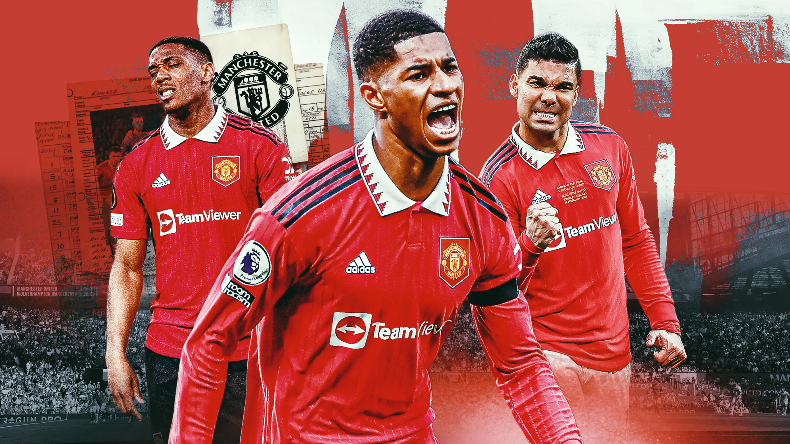

Players
 VIEW PROFILESLEGENDS

He has magic in his boots. The first thing you notice about him is that he is incredibly quick and very, very powerful for such a young man. He has great, close control and his technique is excellent. He believes he can do anything with the ball, and that confidence makes him very special indeed.
He is a true great for club and country, and it is fitting that he is now the highest goal scorer for both United and England. It has been great to watch him every week since his arrival at Old Trafford in 2004; he set the tone with a wonderful hat-trick on his debut and he has thrilled us all in the years since, going on to enjoy a hugely successful career. Now he’s the man to beat and I can’t see anybody doing that for a long, long time to come.
In and out of possession, in the dressing room, the energy every single morning. He was an absolute livewire, street fighter, tough, score goals, assist goals, the best defender, never give in.

David Beckham is up there with the best passers I’ve ever played with; over a long distance he was ‘radar foot’. Some left-footers look beautiful when they pass the ball. His right foot was like that – it even sounded nice when he hit the ball.
That goal against Greece to take England into the 2002 World Cup sends shivers down my spine every time I think about it. He took responsibility as a footballer and is a great role model.